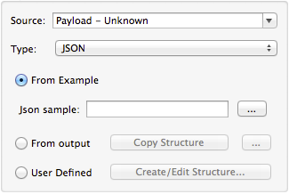
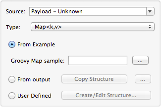
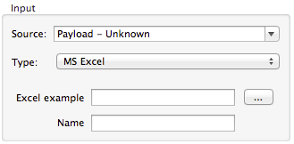
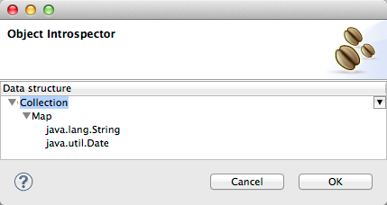
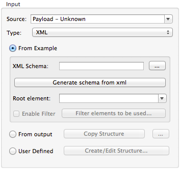
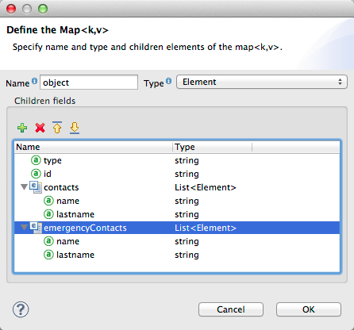

Defining a Data Mapping Flow with Input and Output Metadata
|
DataMapper will continue to be fully supported in all current and future versions of Mule ESB 3.x, however it will be removed in Mule 4.0 in favour of the Transform Message component (based on DataWeave code). We recommend that if you wish to take advantage of the new capabilities of DataWeave or if you start new projects, upgrade now. A migration tool is now included in Studio, which assists in converting a DataMapper map to DataWeave. Right click on a DataMapper, select Migrate to DataWeave, and follow the instructions. 
If you don’t see DataMapper on your palette, you can enable it by going to Preferences → Anypoint Studio → Palette Profiles and ticking the checkbox Show deprecated Mule Components and Attributes. |
Creating mapping is the first step for working with the Anypoint DataMapper. After you create the mapping, the properties editor displays the Data Mapping Flow Editor, where you can map source to target data.
Keep in mind that the act of creating a mapping is irreversible, once you hit the create mapping button, most of what you set up cannot be changed unless you delete your DataMapper transformer and start over.
Assumptions
This document assumes the reader is familiar with the Anypoint DataMapper Transformer. If you are not, start from the beginning: DataMapper User Guide and Reference. For a listing of all available tools in Anypoint DataMapper, consult DataMapper Visual Reference.
Basic Parameters to Set Up
When you first place a DataMapper component on the flow and open its properties editor, you see the fields needed for creating a new mapping.
| Field | Description |
|---|---|
Display Name |
A name to display on the DataMapper building block in your flow |
File Name |
The .grf file that will store the mapping definition |
Input Source |
Select between payload, available variables, available properties, or write your own expression |
Input Type |
Choose the format of the input data |
Output Target |
Select between payload, available properties, or write your own expression to populate the output into a particular variable, property or child element of the payload |
Output Type |
Choose the format of the output data. |
|
The name you enter for the .grf file need not be unique across your project—if the name is used elsewhere in your project, Studio will generate a unique filename for the mapping flow file to avoid any name conflict. |
If you place a DataMapper right after or right before a DataSense-enabled element that is already configured, DataMapper intelligently predicts what data structure is expected or returned and pre-populates its fields accordingly, saving you the work of configuring them.
Otherwise, you must choose a data source for your mapping. You can simply take the payload, as it comes, or pick any of the variables in the mule message, inbound or outbound properties in the message. If you want to select a particular section of the payload, or any property that isn’t available in design time, you can also type a MEL expression such as #[payload.myAttribute] to refer to this, instead of selecting from the drop down menu.
The output target can be similarly configured, both through the available options in the drop down menu or by typing in an expression. You can map the data to any existing or non existing property, variable, or child element of the payload by using an expression in such a way.
The available input and output types include:
-
Flat data: CSV (delimited file), Microsoft Excel, or fixed width file data
-
Structured data: XML, JSON, POJO (Plain Old Java Objects), Map<k,v> (key-value maps)
-
Data from Anypoint Connectors: accessing SaaS applications or any other source or target for which Mule has a connector. Data is typically in either Map or POJO format, depending upon the connector.
|
Editing and Managing .GRF files
|
Defining Input and Output Metadata
Once you have selected the input and output data formats, you must populate the specific metadata, such as data elements, types, and attributes, for the input and output data for this mapping flow. There are three principal ways to populate this metadata:
-
For many input types, metadata can be automatically derived from sample input files.
-
Metadata can be entered manually, or edited manually after being inferred by one of the automated methods.
-
For Connector inputs and outputs, metadata is automatically populated by Mule.
For cases where you are manually defining metadata, there is a convenient shortcut for copying input to output metadata, or vice versa, depending on which one you already have. See Shortcut: Duplicating Metadata between Input and Output for details.
The available fields that define these settings depend on the selected input and output data types. The variations are described in the following sections:
Once you have defined metadata for both input and output. Studio saves the metadata definitions to a mapping flow file, and opens the Mapping Flow Editor where you actually map input data to output data.
|
Post-Metadata Setup For full documentation on the properties explained below, see Mapping Flow Input and Output Properties. |
Defining CSV Metadata
You can define the basic metadata for a delimited input file, including:
-
The column names and types
-
The delimiter used in the file
To define a CSV input or output, select CSV in the Input or Output dropdown, as shown:
Click the ellipsis to select an example file from which to infer metadata.
To explicitly define the columns, select User Defined, then click Create/Edit Structure.
In the Edit Fields dialog, you can:
-
Define columns by name and by type
-
Set the delimiter for your file
Defining a Custom Delimiter for a CSV File
Anypoint DataMapper offers the choice of several common delimiters for a CSV file: the default comma (","); pipe ("|"); semicolon (";"); colon (":"); or space (" "). The dropdown illustrates typical columns separated by the delimiters.
To add a custom delimiter, click + and enter the new character—for example, a tilde ("~"). The new delimiter now appears in the dropdown among the available choices:
Select the new delimiter from the list to finalize your choice.
|
Additional Properties for CSV Files CSV files have additional properties that can only be configured from the Properties dialog in the Data Mapping View, and that affect how input data is parsed and how output data is generated. You should review these properties once you have the mapping flow open in the mapping flow editor. See "CSV Input and Output Properties" in Mapping Flow Input and Output Properties for details. |
Defining Connector Metadata
For connector metadata, the DataMapper can take its metadata from the connector input or output.
|
DataMapper, Connectors and DataSense Through Anypoint Studio’s support for Perceptive Flow Design, DataSense-enabled connectors retrieve from the connected source system full metadata for supported operations and objects, including any custom objects and fields. If you model a flow to include a connector that supports perceptive flow design as an input to or output from a DataMapper, Mule uses metadata retrieved from the connected system – a SaaS provider, for example – and feeds that data into the DataMapper to automate correct input and output metadata setup. See DataSense and Using Perceptive Flow Design for more details. |
When a connector already defined in a Mule flow is input or output for your DataMapper, the operation and any associated object classes are filled in for you.
If necessary, you can override the metadata linked to an operation by selecting By Type and then selecting an object type.
Defining Fixed Width Format Metadata
For metadata for fixed width data, you can select a sample input file:
Column formats are inferred from the input file.
Alternatively, you can select "User Defined" and manually define name, type, and column width metadata:
Note: See Fixed-Width Input Format for several examples of working with fixed-width input format data.
|
Additional Properties for Fixed Width Data Fixed-width data files have additional properties that can only be configured from the Properties dialog in the Data Mapping View and that affect how input data is parsed and how output data is generated. You should review these properties once you have the mapping flow open in the mapping flow editor. See "Fixed Width Input and Output Properties" in Mapping Flow Input and Output Properties for details. |
Defining JSON Metadata
There are three ways to define JSON metadata:
-
By selecting a sample JSON file
-
By manually creating a JSON file definition
-
By copying the structure you defined in the input/output

Using a JSON Sample
To define JSON Metadata using a sample JSON file:
-
Select Type JSON.
-
Choose From Example.
-
Click the ellipsis "…" and browse to or enter the path to the sample JSON file.
Using User-Created JSON Definition
To define JSON Metadata directly:
-
Select Type JSON;
-
Choose User Defined;
-
Click Edit Fields.
The Define the JSON dialog opens.
Here you can specify:
-
the name and type of the parent, which can be a single Element or a List of Elements;
-
the names and types of child elements that make up the structure inside the parent, which can be strings, numeric types, dates, Booleans, Elements, or lists of any of the above.
|
Additional Properties for JSON Data JSON data has additional properties that can only be configured from the Properties dialog in the Data Mapping View, and that affect how input data is parsed and how output data is generated. You should review these properties once you have the mapping flow open in the mapping flow editor. See "JSON Input and Output Properties" in Mapping Flow Input and Output Properties for details. |
Defining Key-Value Map Metadata
There are two ways to define key-value map metadata:
-
By manually defining the key-value map structure
-
By providing Groovy code that constructs a Map object of the desired form
-
By copying the structure you defined in the input/output

Using Direct Key-Value Map Definition
To define a Key-Value Map Definition directly:
-
Choose Input type Map<k,v> and select User Defined.
-
Click "Edit Fields". Enter the name for your Map, the Type (which can be Element or List<Element>).
-
Then add child fields for your Key-Value Map, setting name and type for each.
Using a Groovy Map Sample Script
To define a Key-Value Map using a Groovy script as an example, create a Groovy script that constructs and returns a Key-Value Map object of the desired structure.
For example, this Groovy script defines a single key-value Map representing one person’s contact information:
return [name:"John",lastName:"Harrison",address:"4th Street",zipCode:1002]This Groovy script defines a List of Key-Value Maps representing contact information for multiple people:
return [
[name:"John",lastName:"Harrison",address:"4th Street",zipCode:1002],
[name:"Dan",lastName:"Tomson",address:"6th Street",zipCode:1003]
]To use a Groovy script to define Key-Value Map metadata:
-
Select Type: Map<k,v>
-
Select From Example
-
Enter the path to the Groovy script file in Groovy Map Sample, as shown:
Additional Properties for Key-Value Maps Data
Key-Value Map data has additional properties that can only be configured from the Properties dialog in the Data Mapping View and that affect how input data is parsed and how output data is generated. You should review these properties once you have the mapping flow open in the mapping flow editor. See "Key-Value Map Input and Output Properties" in Mapping Flow Input and Output Properties for details.
Defining MS Excel Metadata
To define metadata for an MS Excel spreadsheet:
-
Select Type
MS Excel. -
Enter a path to a sample Excel spreadsheet, or click the ellipsis "…" to browse the filesystem for one.
-
Enter a value for Name, used to reference the input spreadsheet in DataMapper expressions.

There are no user-modifiable metadata definitions for Excel spreadsheets. DataMapper will infer column names and data types from the contents of the spreadsheet.
Defining POJO Metadata
Metadata for a POJO (Plain Old Java Object) as DataMapper source or target consists of a definition of the class of the Java object. This can be a single class, or a complex structure consisting of nested Collections and key/value Maps containing any Java class in your project.
To define metadata for a POJO:
-
Select Type
Pojo. -
Click the ellipsis … to open the Object Introspector dialog.
-
Construct the needed structure in the Object Introspector.

Once you have a complete description of the desired class structure, click OK.
|
Additional Properties for POJO Data POJO input and output data has additional properties that can only be configured from the Properties dialog in the Data Mapping View and that affect how input data is parsed and how output data is generated. You should review these properties once you have the mapping flow open in the mapping flow editor. See "POJO Input and Output Properties" in Mapping Flow Input and Output Properties for details. There are also two specific situations in which you need to make changes when using POJO as an output format:
The properties required are accessed through the Input and Output Properties dialog in the DataMapper mapping view. See POJO Metadata: Bindings and Factories for details. |
Defining XML Metadata
There are three ways to define XML metadata:
-
Provide an XSD schema definition
-
Provide a sample XML file, from which Mule can derive an XSD file
-
Directly enter user-defined metadata
Using an XSD Schema Definition
To define XML metadata using an XSD schema definition:
-
Select Type
XML. -
Choose From Example.
-
Click the ellipsis "…" and browse to an XSD file, or enter the path to the XSD file directly.

Using an XML Sample
Studio can use an XML sample file to generate an XSD schema, which it can then use to define XML metadata.
To generate an XSD schema definition file from sample XML:
-
Click Generate Schema from XML.
-
Enter or browse to the path to the sample XML file, and the path to the directory where the XSD will be stored. (In general, this directory should be inside your Mule project.)
-
Click OK.
You can optionally select only a sub-branch of the XML tree structure. Once you have selected a sample XML file, DataMapper will parse it and present a list of the elements in it in the dropdown menu next to Root Element. By picking an element in that list, you tell DataMapper to only take data from this point in the tree down.
Studio generates an XSD file in the specified schema directory, and fills in the XML schema path with the full path to the XSD file.
From this point, behavior is the same as if you had originally selected an XSD file.
|
Review the Derived XSD While you can see the structure in the Data Mapping Editor, it is also prudent to review the generated XSD file to ensure that the derived definitions fully match your expectations. |
|
Additional Properties for XML XML input data has additional properties that can only be configured from the Properties dialog in the Data Mapping View and that affect how input data is parsed and how output data is generated. You should review these properties once you have the mapping flow open in the mapping flow editor. See "XML Input and Output Properties" in Mapping Flow Input and Output Properties for details. |
Shortcut: Creating Output Metadata based on Defined Input Metadata
When defining the input and output metadata, often the output metadata will be very similar in structure to the input metadata (for example, a contact name with a list of addresses), even though the underlying format will be different (for example, Pojo vs. JSON). In such cases, there is a shortcut for quickly populating the output metadata, reproducing the structure of the input. If the structures are not exactly the same, you can then edit the output or input as needed to account for the differences.
For example, you can recreate the input metadata structure created by sampling this JSON input file:
{
"type": "members",
"id": "id0",
"contacts": [
{
"name": "",
"lastname": ""
},
{
"name": "",
"lastname": ""
},
],
"emergencyContacts": [
{
"name": "",
"lastname": ""
},
]
}The goal in this example is to create a Maps/List of Maps output metadata structure that corresponds to this JSON input structure.
-
Save the above text as contacts.json in a convenient directory.
-
Add a new DataMapper to a flow.
-
In the Input section of the the Select Input and Output Type pane, select Type JSON, select From Example, and for Json sample, enter the path to your contacts.json file.
-
In the Output section, select a different structured format for Type—for this example, Map<k,v> . Select User Defined , and click *Generate default * under the *Name * field.
DataMapper duplicates the structure of the JSON file as a key-value map.
-
Under Output, click Edit Fields to see the result. The generated name object has been inserted, and the Type is Element. The structure of the input is reproduced as a starting point for the output metadata definition.
You can edit the resulting structure further, adding or removing elements as needed. The use of this editor is described in Defining Metadata Using Edit Fields. When you have finalized the structure, click OK.
See Also
Once you finish creating the mapping, the mapping flow definition opens in the graphical mapping editor. At that point you will define the element mappings and transformations for your data, as described in Building a Mapping Flow in the Graphical Mapping Editor.
You can also:
-
set additional properties that affect the handling of input and output, as described in Mapping Flow Input and Output Properties
-
revise your metadata definitions, if necessary, as described in Updating Metadata in an Existing Mapping.